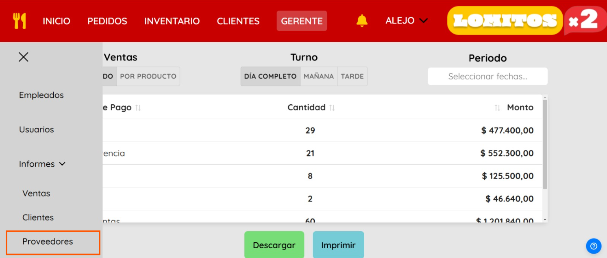

1.Login y acceso al sistema
Sección para el ingreso al sistema Order Tracker. Es necesario completar ambos campos antes de gestionar el ingreso al mismo.
- Ingresa usuario.
- Ingresa contraseña.
- Pulsa en “Ingresar”.


Mensaje de advertencia, debe revisar que haya colocado la información correcta en los campos correctos. Usuario y/o son incorrectos. Deberá llenar los campos nuevamente. Ante la posibilidad de haber olvidado sus datos comunicarse con el proveedor del sistema.
2.Barra de navegación
A continuación navegaremos sobre la barra de navegación superior para entender su funcionamiento. Esta barra permanecerá abierta en todo momento.

- 1.Sección “Inicio”
- 2.Sección “Pedidos”. Bandeja de pedidos, ingreso a la caja.
- 3.Sección “Productos”. Productos registrados, insumos y proveedores.
- 4. Sección “Clientes”. Clientes registrados.
- 5. Sección “Gerente”. Usuarios registrados, empleados, caja, ventas y demanda.
- 6. “Campana de Notificaciones”. Pedidos a proveedores, información importante, alerta baja stock.
- 7.
 “Usuario”. Cierre de sesión. Al seleccionar “Cerrar sesión” quedará sin la posibilidad de navegar dentro del sistema.
“Usuario”. Cierre de sesión. Al seleccionar “Cerrar sesión” quedará sin la posibilidad de navegar dentro del sistema. - 8. Logo del local gastronómico. “Lomitos x2”.
3.Inicio
En esta sección trabajaremos con el manejo de caja.

En el menú principal, tenemos la barra de navegación, una bandeja de pedidos pendientes que se van realizando por turno, con su botón de generar pedido y por la derecha tenemos un recuadro con información de la caja una vez sea abierta con su botón para abrir y cerrar caja.

Seleccionar el botón “Abrir caja” cuando haya comenzado el turno laboral.

Al abrir la caja deberá completar:
- El monto inicial con el cual se abre la caja
- El empleado que estará encargado del mismo
- Confirmar

Una vez abierta se mostrará un mensaje de confirmación, el perfil del empleado de turno que estará encargado de la caja, un cronómetro que empieza a correr una vez esté abierta la caja y el botón de “Cerrar caja”.


Una vez que el turno finalice, el encargado presionará el botón de “Cerrar Caja”. El sistema devolverá el nombre de los empleados, con las horas trabajadas y el monto a pagar. Este monto se puede editar por cualquier inconveniente y debe apretar el botón pagar una vez pagado al empleado.

El sistema permitirá editar el monto a pagar a cada empleado y permitirá agregar una pequeña descripción del porque.

Finalmente aparecerá un mensaje de confirmación de cierre de caja.
4.Pedidos
En la siguiente sección se encontrará con la bandeja de notificaciones, bandeja de pedidos pendientes y una pequeña visualización de la caja.

Para generar un nuevo pedido debe presionar el botón “Generar pedido”, el mismo lo llevará a la siguiente pantalla.

1. Ingrese el producto en cuestión: A mano izquierda encontramos una carta con todos los productos divididos por categoría, también puede buscar con palabra clave en la barra que se encuentra por encima de la carta.
2.Complete los campos requeridos con: “Tipo de entrada” (medio de ingreso el pedido); “Tipo de entrega” (como se realizará la entrega del pedido); “Nombre del cliente” (que realizó el pedido); “Detalles adicionales” (si fuese que pide sin alguna verdura o algo en especial), y por último “Medio de pago ” (que el cliente usará para abonar el pedido).

3.Supongamos que usted seleccionó la categoría de “Lomitos”, verá las opciones que se muestran aquí arriba en la carta. Apretarán en añadir cuantos lomos quiera (quiere dos lomos, deberá pulsar dos veces). A medida que vaya seleccionando productos los verá reflejados en el ticket que se muestra a mano derecha. Para volver a las categorías y poder seleccionar otra, le costará sólo con apretar la flecha que se encuentra en la parte superior izquierda de la carta.
4.Deberá completar los campos que respecta a “Envio” y “Abona con”.
5.Una vez completado los campos necesarios, pulse el botón “Generar”.

 Reloj que cuenta el tiempo desde que ingresó el pedido a la bandeja de pendientes.
Reloj que cuenta el tiempo desde que ingresó el pedido a la bandeja de pendientes.- Cliente: Nombre del cliente al cual se le entregará el pedido.
- Pago: Puede ser PENDIENTE o PAGADO.
- Monto Total: El monto del pedido. Si lo presionamos podemos generar que se oculte para que no sea visible el monto.
 Pedido: Aquí podremos ver un modal con un resumen del pedido realizado.
Pedido: Aquí podremos ver un modal con un resumen del pedido realizado.- Operaciones:
 Seleccionar este icono si el pedido es para entregar con Delivery.
Seleccionar este icono si el pedido es para entregar con Delivery. Al pulsarlo se le abrirá una ventana donde debe seleccionar el nombre del cadete encargado de la entrega.
Al pulsarlo se le abrirá una ventana donde debe seleccionar el nombre del cadete encargado de la entrega.- Luego de seleccionar el cadete el ícono se cambiará automáticamente por una tilde.
 Una vez que el pedido esté abonado presiona el ícono del dinero.
Una vez que el pedido esté abonado presiona el ícono del dinero. Debe seleccionar el icono del lápiz si desea modificar el pedido.
Debe seleccionar el icono del lápiz si desea modificar el pedido.
 Deberá seleccionarlo si desea cancelar el pedido.
Deberá seleccionarlo si desea cancelar el pedido. Este ícono tiene la función de imprimir comanda.
Este ícono tiene la función de imprimir comanda.  Una vez que el pedido salga de cocina y esté listo para ser entregado selecciona el icono de la tilde.
Una vez que el pedido salga de cocina y esté listo para ser entregado selecciona el icono de la tilde.  Allí se le mostrará un mensaje de confirmación
Allí se le mostrará un mensaje de confirmación  Cuando se haya confirmado la entrega desaparecerá de la bandeja de pendientes.
Cuando se haya confirmado la entrega desaparecerá de la bandeja de pendientes.

A la derecha de la página principal aparecerá un breve resumen del movimiento de la caja durante el turno.

Al seleccionar el botón “Cerrar caja” se encontrará con la siguiente pantalla:

5.Notificaciones

La bandeja de notificaciones se encuentra dentro de la campana al lado del logo de la empresa. Muestra brevemente los avisos de falta de stock. Estos desaparecerán a medida que la mercadería ingrese y se sume al stock.
6.Productos
Cuando seleccione “Productos” en la barra superior de navegación se encontrará con la pantalla principal de la sección que muestra una lista con los productos registrados, una barra vertical de navegación (divide la sección en productos, proveedores e insumos), un buscador, un filtro y el botón “Registrar nuevo producto”.

- Acción para poder filtrar los productos por categoría.

- Barra para buscar con palabra clave.

- Precio por producto individual o promoción por dos.

- Eliminar producto. Cuando seleccione este ícono se le mostrará un mensaje de confirmación:

- Cuando seleccione la confirmación se mostrará la acción realizada con éxito

- Editar producto.

- Al seleccionar dicha acción se encontrará con el siguiente modal, donde tendrá la opción de modificar nombre del producto, precio x1, x2, categoría y descripción.

 Cuando guarde cambios se mostrará mensaje de confirmación.
Cuando guarde cambios se mostrará mensaje de confirmación.

Complete con nombre del producto, descripción, seleccione categoría a la que pertenece, precio x1, si califica para promoción debe confirmar y colocar precio x2. Es necesario completar todos los campos, de caso contrario se le mostrará mensaje de advertencia:

Una vez que se hayan completado los campos se mostrará mensaje de éxito 
7.Proveedores
En la pantalla de productos, debe desplegar el menú hamburguesa y seleccionar “Proveedores”.

La misma acción lo llevará a la siguiente pantalla:

Al igual que el apartado de productos registrados esta pantalla muestra una lista con los proveedores registrados, un menú hamburguesa (divide la sección en productos, proveedores e insumos), un buscador, un filtro y el botón “Registrar nuevo proveedor”. A diferencia del apartado de productos registrados este contiene una caja “Pedidos en Curso”, aquí los pedidos se ordenan por fecha de pedido del último al más antiguo.
- Para editar el proveedor se le mostrará la siguiente plantilla donde podrá modificar los campos que desee.
- Barra para buscar con palabra clave.
- Precio por producto individual o promoción por dos.
- Eliminar producto. Cuando seleccione este ícono se le mostrará un mensaje de confirmación:
- Cuando seleccione la confirmación se mostrará la acción realizada con éxito
- Editar producto.
- Al seleccionar dicha acción se encontrará con el siguiente modal, donde tendrá la opción de modificar nombre del producto, precio x1, x2, categoría y descripción.
- Cuando guarde cambios se mostrará mensaje de confirmación

Presionando el botón “Registrar nuevo proveedor” lo llevará a la siguiente pantalla donde deberá llenar los campos de nombre completo, teléfono, dirección, email, seleccionar la categoría que le provee y el estado del mismo ya sea que se encuentre entre sus proveedores activos o inactivos.

Al registrar le aparecerá el mensaje de que se ha realizado la acción con éxito:

8.Pedido a proveedores
En la pantalla principal de la sección proveedores encontrará esta bandeja de “Pedidos en curso”. Aquí podrá visualizar los pedidos que han sido realizados y están en curso de ser recibidos.La fecha corresponde a cuando ha sido realizado el pedido y el nombre del proveedor.

-
 El ícono del ojito puede utilizarse para visualizar con detalle el pedido realizado y editarlo.
El ícono del ojito puede utilizarse para visualizar con detalle el pedido realizado y editarlo.
-
 Con este ícono podrá copiar el pedido generado para poder pegarlo vía Whatsapp al proveedor.
Con este ícono podrá copiar el pedido generado para poder pegarlo vía Whatsapp al proveedor.
-
 El ícono de la cruz lo utilizara cuando desee cancelar el pedido.
El ícono de la cruz lo utilizara cuando desee cancelar el pedido.
-
 La tilde la utilizará una vez haya recibido el pedido en cuestión.
La tilde la utilizará una vez haya recibido el pedido en cuestión.
Cuando desee generar un pedido nuevo presione el botón "GENERAR" y se encontrará con la siguiente pantalla:

Aquí seleccione el proveedor, el producto que necesita que le provea, cantidad, unidades, categoría a la que pertenece y algún detalle adicional si es necesario. Una vez completado los campos pulse “Generar Pedido”, se mostrará un mensaje de confirmación:

Si presiona “Si”, mostrara el mensaje de éxito:


La tilde debe ser presionada una vez que el pedido ingresa al local. Donde se confirma la mercadería que ingresa, la cantidad y se refleja el monto a pagar, la cantidad que pudo ser saldada, el medio de pago que fue utilizado y si fue pagado o queda pendiente.


Si el pedido está marcado como pendiente de pago, se adjuntará en este apartado. Presionando el ícono de dinero podrá marcarlo como pagado y desaparecerá de la lista de "Pendientes de Pago".
9.Insumos
En la pantalla de productos, debe desplegar el menú hamburguesa y seleccionar “Insumos”.

La misma acción lo llevará a la siguiente pantalla:

En la misma se muestra una lista de insumos que han sido registrados con anterioridad, en la misma se muestra:
- Cantidad: número de stock del producto que se actualiza de manera programada al momento de vender un pedido.
- Unidad: unidad de medición del producto, puede ser unidades, kilos o gramos.
- Stock mínimo: el mínimo de número de stock que hay que tratar de evitar que llegue producto.
- Punto de pedido: número de stock del producto que al llegar el sistema genera mensaje de alerta (que se muestra en bandeja de notificaciones) para que se genera pedido al proveedor.
- Precio: precio de costo al que se consigue el producto.
- Editar insumo.
 Eliminar insumo.
Eliminar insumo. Asignar stock: Esta acción tiene la función de que se pueda asignar manualmente a qué productos de la carta está relacionado cada insumo, es decir, por ejemplo un bife de ternera lo asignaremos a los productos de lomito de ternera grande y chico, asignando al grande un bife (1) y al chico medio bife (0.5). Entonces al vender dos lomos chicos se descontará de nuestro insumo un bife (1).
Asignar stock: Esta acción tiene la función de que se pueda asignar manualmente a qué productos de la carta está relacionado cada insumo, es decir, por ejemplo un bife de ternera lo asignaremos a los productos de lomito de ternera grande y chico, asignando al grande un bife (1) y al chico medio bife (0.5). Entonces al vender dos lomos chicos se descontará de nuestro insumo un bife (1).

Ventana modal para asignar stock: Se muestra una lista con los productos de la carta, a cada uno podrá agregarle el número de unidades que se descontarán al momento de la venta.
- Registrar nuevo insumo: Deberá completar los campos de nombre de insumo, cantidad, tipo de unidad de medición, categoría a la que pertenece, stock mínimo, punto de pedido y precio al costo.
- Registrar salida: Opción para descontar manualmente stock de insumo en caso de que por ejemplo se hechó a pperder alguna materia prima o producto y el sistema no ha descontado ya que no ha registrado la salida por venta. Aquí agregaremos el nombre del insumo, la cantidad que deseamos descontar del stock y la razón en la descripción.


10.Clientes
En esta sección encontrará una lista y ciertas operaciones para poder registrar, modificar y eliminar clientes, pudiendo así brindar una buena atención a esos clientes de siempre. Por encima de la lista del lado derecho encontramos un buscador para poder filtrar por palabra clave y de lado izquierdo un filtro para para poder seleccionar si queremos que muestre los activos o inactivos.

- Botón "REGISTRAR CLIENTE"
- Editar Cliente.
- Eliminar Cliente.


- Si da confirmación el cliente quedará en la lista de inactivos, lo podrá encontrar seleccionando en el filtro que se encuentra por encima de la lista del lado izquierdo.
11.Gerente
La pantalla principal de la sección gerente pertenece a usuarios con una lista de usuarios registrados (quienes serán los que puedan acceder y manejar el sistema), el rol que cumplen en su labor, la posibilidad de modificar y desactivar su perfil. Del lado izquierdo de la pantalla cuenta con un menú hamburguesa con los apartados de Empleados, Caja, Ventas, Demanda y usuarios en la que estamos posicionados.

Para registrar un usuario, presiona el botón "REGISTRAR NUEVO USUARIO" nuevo deberá completar los siguientes campos:

Nombre usuario que utilizará para navegar en el sistema, contraseña y selecciona el rol que cumple en su labor (ADMINISTRADOR O ENCARGADO). Le aparecerá mensaje de advertencia en caso de que no haya completado todos los campos
- Editar Usuario.
- Eliminar Usuario.


- Al confirmar la acción ambos mostraran mensaje de que ha sido realizado con éxito.
12.Empleados Registrados

En el menú hamburguesa que se encuentra del lado izquierdo en la pantalla de gerente, seleccione la ventana de “empleados”. La misma lo llevará a la siguiente pantalla:

En esta pantalla encontrará una lista con los empleados que han sido registrados con su nombre completo, teléfono, email, dirección, podrá editar o desactivar cada empleado. En la parte superior derecha de la lista tiene una barra para buscar con palabra clave, del lado superior izquierdo un filtro donde para ver empleados activos o inactivos. Cuenta con un botón para poder ver sueldos y poder registrar nuevo empleado.
Podrá seleccionar sobre cada empleado para ver en detalle la información de cada uno, aparte podrá ver turno laboral, puesto asignado, pago por hora y un historial de pagos con fecha y hora realizada, horas trabajadas, monto esperado, monto pagado y una pequeña nota si ha sido agregado.


En la pantalla principal de la ventana, debajo de la lista presionará el botón "REGISTRAR NUEVO EMPLEADO":

Le aparecerá mensaje de advertencia en caso de que no haya completado todos los campos
- Editar Usuario.
- Eliminar Usuario.

- Editar Empleado: Una vez haya modificado pulsa “Enter”.


Debajo de la lista de empleados registrados podrá pulsar este botón para poder ver los sueldos de cada empleado en detalle, en la lista podrá ver el puesto asignado a cada uno, el pago por hora, por turno y sueldo mensual calculando este considerando 26 días laborales al mes y 4 horas de trabajo por dia, sin incentivos.


13.Informes Ventas
En el apartado “GERENTE” y dentro del menú hamburguesa encontramos los “INFORMES”. Tenemos la posibilidad de elegir entre informes de ventas, clientes y proveedores.


En los informes de ventas, se ofrecen dos filtros principales: “POR PERIODO” y “POR PRODUCTO”.
Al seleccionar la opción “POR PERIODO”, podrás visualizar las ventas generadas en un intervalo de tiempo específico que determines. Este intervalo puede configurarse por turno, por día completo o por un período personalizado.
El informe detallará la cantidad total de ventas realizadas durante el periodo seleccionado, el número de transacciones efectuadas, las ganancias obtenidas desglosadas según los diferentes métodos de pago (efectivo, transferencia, débito y crédito) y los ingresos totales generados en dicho periodo.


Al seleccionar la opción “POR PRODUCTO”, podrás visualizar un listado de los productos más vendidos, ordenados de mayor a menor según su volumen de ventas. Para esto deberás seleccionar un periodo de tiempo para el análisis, el cual puede ser por día, semana, mes o año. Si deseas buscar un producto específico, puedes utilizar el ícono de la lupa para encontrarlo rápidamente.
El informe incluirá los ingresos generados por cada producto, el porcentaje de participación en las ventas totales y la cantidad de unidades vendidas de cada producto.
14.Informes de Clientes
En el apartado “GERENTE” y dentro del menú hamburguesa encontramos los “INFORMES”. Tenemos la posibilidad de elegir entre informes de ventas, clientes y proveedores.


En los informes de clientes, podrás acceder a un listado detallado de los clientes que te han realizado compras. Para cada cliente, se mostrará información personal, como nombre, teléfono, dirección, el historial de compra y el total de compras realizadas. Además, tendrás la posibilidad de filtrar a los clientes por mes, año o un periodo de tiempo específico. También podrás buscar directamente a un cliente por su nombre utilizando la barra de búsqueda.


Dentro del historial de compras, podrás visualizar información detallada de los pedidos realizados por cada cliente, incluyendo el número total de pedidos realizados, las fechas en las que se efectuaron, el detalle de cada pedido, el método de pago utilizado, el monto total de cada pedido.
En este apartado, tendrás la opción de descargar el informe o imprimirlo para tu conveniencia. Además, podrás buscar un pedido específico utilizando la barra de búsqueda.
15.Informes de Proveedores
En el apartado “GERENTE” y dentro del menú hamburguesa encontramos los “INFORMES”. Tenemos la posibilidad de elegir entre informes de ventas, clientes y proveedores.
En los informes de ventas, se ofrecen dos filtros principales: “GENERAL” y “PROVEEDOR”.
Al seleccionar la opción “PROVEEDOR”, podrás visualizar una lista de proveedores con sus nombres, categoría y un historial de compra. Aquí podrá buscar por nombre a un proveedor, descargar el informe o imprimirlo.


Al seleccionar la opción “GENERAL”, podrás visualizar una lista con las compras a proveedores más recientes, el nombre del proveedor, la fecha, el producto comprado, la cantidad, el monto que abonamos y el total de la compra. Aquí podrá filtrar la búsqueda por fecha.